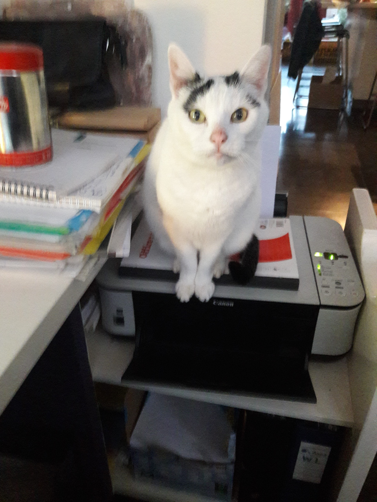

Katten staan algemeen bekend als een van de schattigste dieren.
Het gerucht gaat al lang dat ze de hele mensheid onder hypnose hebben gebracht,
zodat ze hun doelen van 'gevoerd worden' bereiken en tegelijkertijd kunnen doen wat ze maar willen in onze huizen..
Deze kat toont het bekende "schattige-voer-mij-nu-gezicht":

Katten vinden het leuk om onschuldige stukjes touw aan te vallen,
om je benen te lopen op exact het moment dat je een pannenkoek op het fornuis probeert om te draaien en urenlang te slapen.